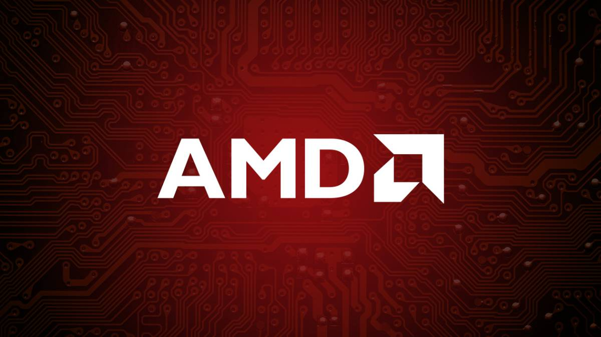
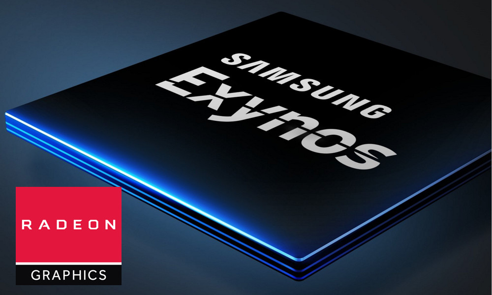
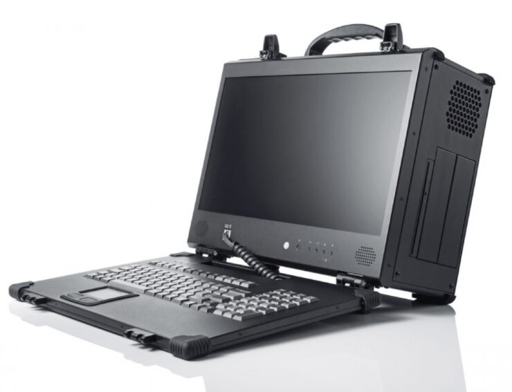
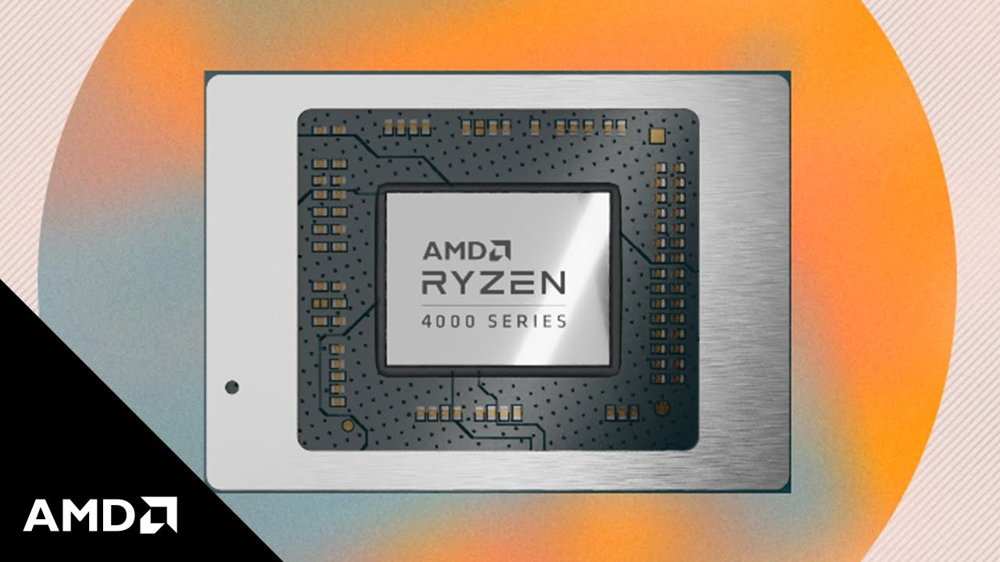

Hardware Solutions
Noticias AMD
AMD Ryzen y Epyc 'Zen 4' podrían tener una cache L4.
Habían surgido rumores de que la cantiad de memoria cache de la arquitectura Zen 4 podría duplicarse gracias al aumento de densidad de datos que va a aportar el nodo de 5nm EUV. La atente compartida por underfox ilustra el añadido, una nueva memoria cache L4 en los entornos virtuales:

Hasta ahora los procesadores Ryzen y Epyc de AMD, tienen una cache L1 y L2 que es único para cada núcleo. Así que el cache L3 se comparte entre los núcleos en un CCX. Según estos informes, Zen 4 iría a unificar la cache L3 para dar servicio a todo el CCD (2xCCXs). Esta nueva patente incluye la posibilidad de una cache L4 que servirá a los fallos de cache de L3 que aparecen en los CCDs, principalmente sirviendo a toda la CPU.
AMD ha introducido una cache L3 con sus GPU Navi, mientras que la linea Turing de Nvidia todavía cuenta con dos niveles de cache. Sin embargo aquí la cache L4 está dirigida principalmente a entornos virtualizados en los que varios usuarios comparten el mismo procesador o conjunto de procesadores. No está claro como el hecho de tener una cache L4 común para todos los CCD mejorará el rendimiento, especialmente sabiendo que serán utilizados por diferentes usuarios. Así que tendremos que esperar más información al respecto.
Fuente:
Samsung, AMD y ARM buscan crear el mejor procesador en la historia de Android.
En los últimos 2 años hemos visto como Qualcomm ha superado con creces a todos sus rivales en Android en lo que respecta a procesadores, pues ni Huawei con sus Kirin ni Samsung con sus Exynos han logrado estar a la altura de la firma norteamericana en lo que respecta a rendimiento. De hecho, con los teléfonos de Samsung la polémica ha sido que muchos usuarios se han dado cuenta que los teléfonos de la marca con un Snapdragon funcionan mejor que aquellos con un Exynos, situación que ha molestado a muchos.
Ante esta situación parece que Samsung ha decidió ir con todo para mejorar sus procesadores Exynos, pues según menciona el medio BusinesKorea, la firma se ha aliado con AMD y ARM para crear el mejor Exynos en la historia de la compañía, el cual también busca ser superior a la próxima generación del Snapdragon de gama premium. Como sabemos, muchos procesadores están basados en la arquitectura de ARM, de ahí que Samsung haya buscado a la firma para hacer los cambios necesarios en la arquitectura de los chips Exynos. Aparentemente aquí entra en juego Cortex-X de ARM, la arquitectura mejorada de la empresa que está lista para ofrecer un gran rendimiento, y la cual se puede ajustar perfectamente a las capacidades de cada dispositivo.
Fuente:
Este portátil en realidad es una workstation portable capaz de montar un AMD Ryzen Threadripper 3990X y 256 GB de RAM.
El nuevo dispositivo de Mediaworkstations en realidad parece sacado de una película de espías o de alguna agencia militar de hace 20 años. Pero todo lo contrario, es una potente workstation recién puesta a la venta y capaz de sacar más rendimiento que cualquier portátil de gama alta del mercado. Aunque claro, cuesta encajarlo en la definición de lo que asimilamos como portátil hoy en día.
¿Qué trae en su interior este equipo? Potencia, mucha potencia es lo que trae en su interior. El equipo se puede configurar con un procesador AMD Threadripper modelo 3960X, 3790X o 3990X. A esto le acompaña una GPU Nvidia Tesla V100 de 32 GB y memoria RAM de hasta 256 GB. En cuanto al SSD, se le puede colocar hasta tres SSD de 2 TB cada uno. A primera vista es esencialmente una torre a la que se le ha colocado una pantalla en un lateral y un teclado. Esa pantalla, por cierto, cuenta con resolución 1080p, aunque también hay una versión con resolución 4K. Pero lo interesante son sin duda los puertos que trae: ni rastro de USB-C o HDMI, varios puertos USB-A y conectores jack para audio así como puertos aún dedicados a ratón y teclado. Su precio parte de los 7.997 dólares para el modelo a-XP. Las versiones a-X1P y a-X2P suben a 8.997 y 9.897 dólares respectivamente. Este último, por cierto, toda una poesía verlo desplegar 6 monitores.
Fuente:
CPU-Z 1.93 añade soporte para AMD Ryzen PRO 4000G y Tiger Lake.
CPU-Z es una herramienta que nos proporciona información detallada de cualquier CPU que haya instalado en un PC. Los detalles sobre el procesador son mucho mas detallados que los que nos proporciona windows o cualquier otro sistema operativo, por lo que es muy utilizado, incluso para realizar pequeños benchmarks. Además de brindar detalles sobre el procesador, también puede brindarnos detalles sobre la placa madre y las memorias del equipo.
La novedad más importante que está llegando con CPU-Z 1.93 es que ahora soporta oficialmente los procesadores de la serie Ryzen PRO 4000G de Renoir, incluyendo el Ryzen 7 PRO 4750G, Ryzen 5 4750G y Ryzen 3 4750G. El CPU-Z sigue funcionando en sistemas de 32 y 64 bit, tanto en lenguaje ingles como en chino. En cuanto Intel, es totalmente compatible con la plataforma Intel Tiger Lake que es la 11a generación de procesadores intel core que se lanzarán el 2 de septiembre, principalmente para portátiles.
Fuente:
Datos Relevantes.
- (Advanced Micro Devices) también conocida como AMD, es una compañía de semiconductores que se dedica al desarrollo de procesdores, chpsets para placas base, circuitos integrados, tarjetas gráficas, etc. AMD es el segundo fabricante a nivel mundial de procesadores x86, y el segundo a nivel mundial en la fabricación de tarjetas gráficas en el ámbito profesional y doméstico.
- El 30 de Diciembre de 1994, la corte suprema de California negó a AMD el derecho a usar el microcódigo i386, tras ello se le permitío producir y vender microprocesadores con microcódigo de intel 286, 386 y 486.
- Su primer procesador fué el AMD 9080, una copia del intel 8080 que fué creada mediante técnicas de ingeniería inversa.
- En el año 1982 AMD firma un contrato con Intel para licenciar la producción de procesadores x86, ya que esta arquitectura es propiedad ded Intel.
- El AMD K5 fué el primer procesador creado por la compañía desde sus cimientos y sin nada de código de Intel en su interior. Tras su lanzamiento, surgieron los AMD K6 y AMD K7.
- AMD es la madre de la extensión x84, la cual usan todos los procesadores x86 de la actualidad.
- AMD se marcó otro tanto con Intel con la introducción del Athlon 64 X2 en 2005, el primer procesador de doble núcleo para PC. Este procesador sentó las bases para la creacón de los procesadores actuales, con hasta 32 núcleos en su interior.
- Cuando AMD adquirió a ATI se posicionó en un puesto privilegiado, pues era la única compañía que disponía de CPU's y de GPU's de alto rendimiento, Gracias a esto nació el proyecto 'Fusión' que tenía la función de unir el procesador y la tarjeta gráfica en un solo chip.
- En el 2017 nace AMD Zen de ahí el nombre 'Ryzen' el cual marcó el futuro de AMD, en el año 2018 se crea la segunda generación de Ryzen, en el 2019 llegó la tercera generación basados en una evolucionada arquitectura Zen2, basada en 7nm, y para este 2020, AMD se prepara para sacar la cuarta generación también con una arquitectura basada en 7nm.
- Los primeros procesadores en lanzarse fueron los Ryzen 7 1700, 1700X, 1800X a principios de Marzo de 2017. Zen fué la primera arquitectura en cinco años y demostró un gran rendimiento desde el principio.
- La arqitectura Zen está formada por lo que se llaman los CCX, se tratan de complejos de cuatro núcleos que comparten una cache L3 de 8 MB. Casi toos los procesadores Ryzen están conformados por 2 complejos CCX.
- En el 2017 AMD sacó a la luz los procesadores Ryzen Threadripper, unos monstruos que ofrecen hasta 16 núcleos y 32 hilos de procesadmiento. Esto se comunican mediante Infínite Fabric, es decir, que son cuatro procesadores Ryzen juntos.
- En el año 2006 AMD se une a la aventura de las tarjetas gráficas con la compra de ATI. Rstas están basadas en la arquitectura TeraScale, dentro de esta arquitectura se encuentran las Radeon HD 2000, 3000, 4000, 5000 y 5000.
- La primera arquitectura gráfica desarrollada desde los cimientos por AMD es la actual Graphics Core Next (GCN). Este es el nombre clave para una serie de microarquitecturas, la cual es la sucesora de TeraScale. El primer módulo (GCN) se lanzó en la Radeon HD 7970 en 2011.
- GCN está basada en procesos de 28 y 14 nm, los cuales están disponibles en los modelos Radeon HD 7000, HD 8000, R 200, R 300, RX 400 y RX 500, Tarjetas gráficas de AMD Radeon. Esta arquitectura es utilizada principalmente en el núcleo gráfico de APU de PlayStation 4 y Xbox One.
- Las últimas dos iteraciones de GCN son las actuales Polaris y Vega, ambas fabricadas en 14 nm. Las Tarjetas Polaris se introdujeron en el segundo trimestre de 2016 con las tarjetas ráficas Radeon Serie 400.
- La nueva generación de la arquitectura GCN se denominó Vega y salió a la luz en Enero de 2017. Este nuevo diseño aumenta las instrucciones por relog, y alcanza mayores velocidades de relog, y alberga soporte para memorias HBM2.
- Las mejoras arquitectónicas incluyen nuevos programadores de hardware, un nuevo aceledaor de descarte primitivo, un nuevo controlador de pantalla que puede decodificar a resoluciones de 4K a 60 FPS, por 10bits por canal de color.
Fuente:
© Copyright. Todos los derechos reservados. Diego_Fernandez - 2020.